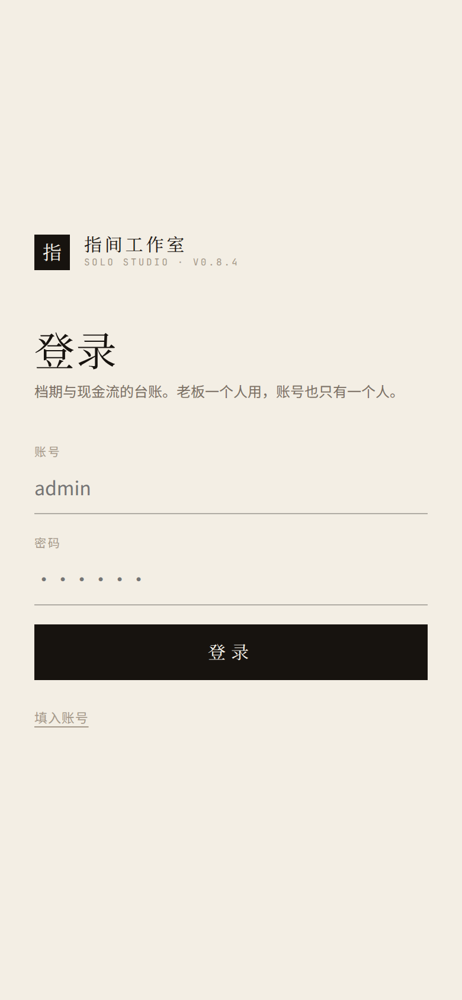
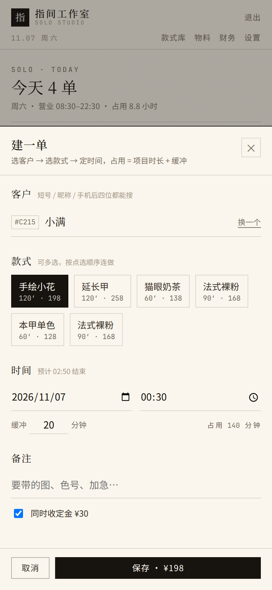
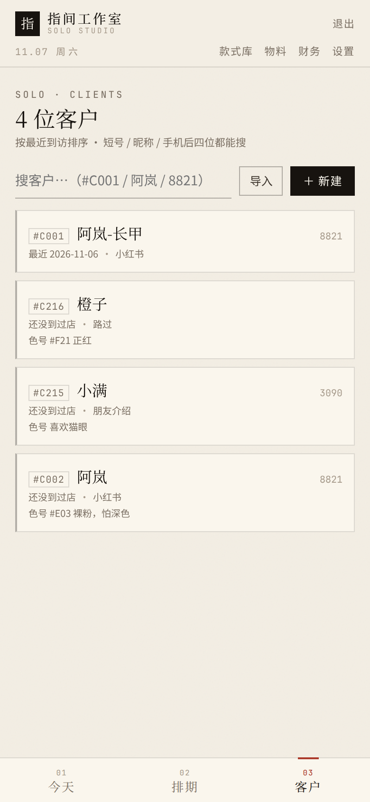
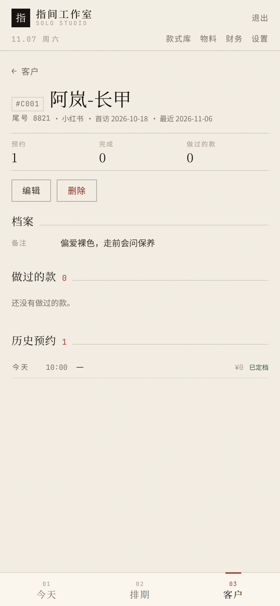
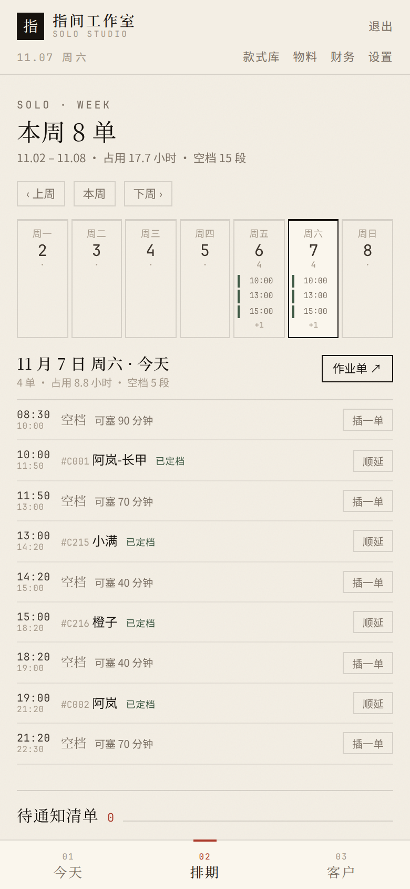
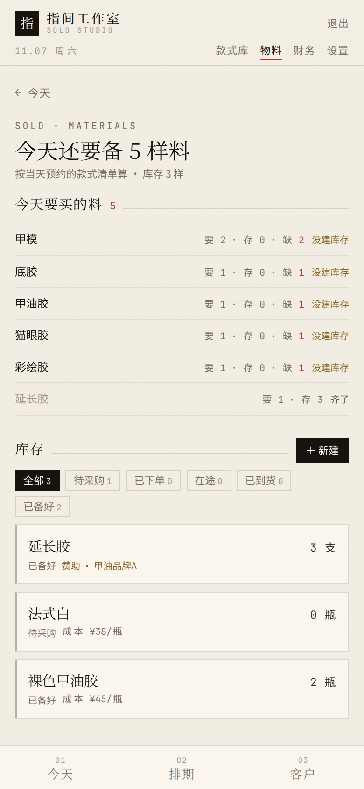
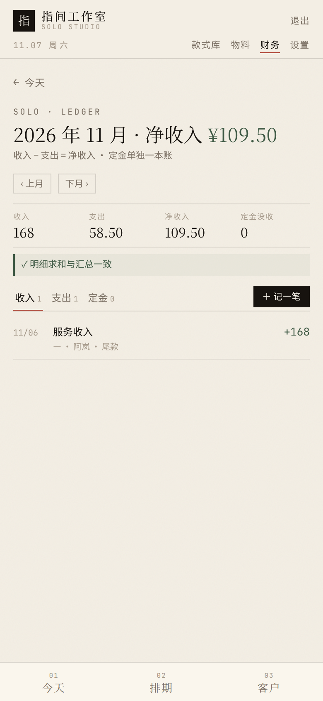
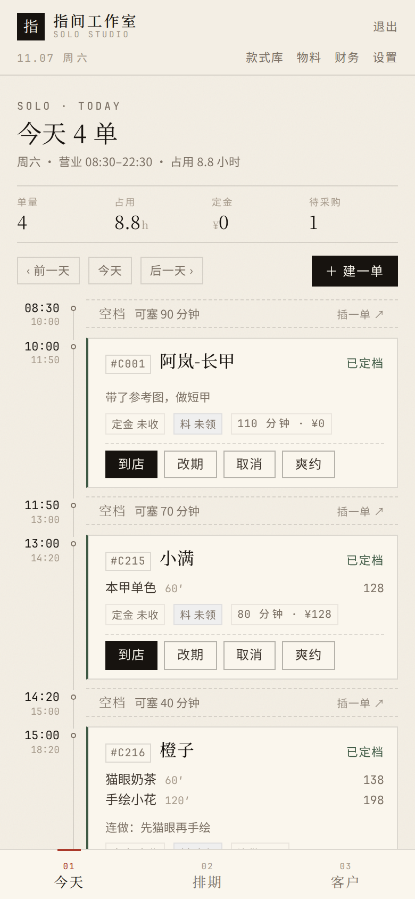

给美甲师自己看的一本说明。不用懂电脑，照着点就行。
遇到不认识的词，最后一节有对照表。
一句话：把你脑子里的排期表、微信里的定金记录、抽屉里的材料单，放进一个地方。
它只帮你盯四件事：
它不会做的事，先说清楚，免得你等功能：不会替你发微信、不会在线收款、客人没有账号、不会自动排班。
文里说的「装系统的人」，就是帮你在服务器上装好这套东西的那个人。
很可能就是你自己（如果你是按说明自己装的），那就把「找装系统的人」理解成「把这事记下来，回头在电脑上处理」。
用手机自带的浏览器（Safari、Chrome 这类），在地址栏输入装系统的人给你的网址，形如：
http://115.190.195.217
| 要填的 | 填什么 |
|---|---|
| 账号 | admin（如果改过登录名，就填新的） |
| 密码 | 装系统的人给你的那一串 |
点「登录」。
账号只有一个。这套系统没有员工账号、没有客户账号，整台机器就是你一个人用。
右上角有「退出」，用别人的手机登过，记得退出。
直接落在「今天」这一页。今天还没排单的话，会显示「今天还没有单 · 点「建一单」把第一单排进去」。
手机上，屏幕最下面永远有这三个，点一下就切换：
| 入口 | 里面是什么 |
|---|---|
| 今天 | 今天的排期，一单一单排下来，中间的空当写着「可塞 N 分钟」 |
| 排期 | 一整个星期 7 列，一眼看出哪天满、哪天有空 |
| 客户 | 你所有的客人，按「最近到访」排序 |
屏幕上那条标题栏下面横着四个：款式库 · 物料 · 财务 · 设置。
这四个平时不常点，是有事才去的地方。点进去后，左上角有「← 返回」（有的页面直接写「← 今天」），点它回到上一层。
每一单是一张卡片：
┌──────────────────────────────────────┐
│ #C002 阿岚 已定档 │ ← 短号、名字、状态
│ 法式裸粉 90' 168 │ ← 做了什么款、多久、多少钱
│ [定金 已收] [料 未领] 110 分钟 · ¥168 │ ← 标签 + 共占时间
│ [到店] [改期] [取消] [爽约] │ ← 现在能做的操作
└──────────────────────────────────────┘#C002）：系统给每个客人编的号，几个字就能搜到人定金 和 料未收 / 已收 / 已退 / 已没收未领 / 已领 2（数字＝这一单领了几样料）这点最容易懵：同一张卡片，在不同阶段按钮不一样。
| 卡片状态 | 你能点的按钮 |
|---|---|
| 待定金 | 收定金 · 改期 · 取消 · 爽约 |
| 已定档 | 到店 · 改期 · 取消 · 爽约 |
| 已到店 | 开始 · 改期 · 取消 |
| 服务中 | 完成 |
| 已完成 / 已取消 | 没有按钮了，只剩记录 |
所以：点过「到店」才会冒出「开始」，点过「开始」才会冒出「完成」。 顺序不能跳。
为什么先做这一步：建单时要选款式，而款式得先有。把常做的几个款建进去，以后建单就是点两下的事。
| 项目 | 怎么填 | 例子 |
|---|---|---|
| 名称 | 客人听得懂的名字 | 法式裸粉 |
| 封面 | 选填，可以后补。用手机拍照上传 | — |
| 标准时长 | 大概做多久，填分钟 | 90 |
| 标准价 | 一般收多少，填元 | 168 |
| 标签 | 选填。填 法式,裸色（逗号用英文逗号：手机上把输入法切到英文再打） | 法式,裸色 |
| 材料清单 | 选填，每行一项，只写名字 | 底胶<br>法式白 |
建好后卡片会显示「90'」「¥168」，点开能改。
材料清单里不用写用量——系统按「这一天有哪些单、每单要哪些料」去和库存比，算出还缺几样。
「款式库」里点「导出案例图」：
iPhone 存进「照片」，安卓一般存进「相册 / Pictures」。图是 1080×1440、带水印，可以直接发朋友圈或小红书。
在「今天」页右上角点「＋ 建一单」，屏幕下方弹出一个输入面板，从上往下一项项填。

↵，不同手机不一样）。按完这一下，系统就当场给她建好档案。
这是接第一个新客的必经动作。按完没反应，说明昵称还没输进去，或者键盘上那个键是「换行」——换个输入法再试。
缓冲不建议填 0：填 0 之后两单紧挨着，前面一拖，后面立刻撞档。
写点有用的：怕深色、带了参考图、加急、朋友介绍。
勾上「同时收定金」，金额是设置里定好的（默认 30 元）。
这个金额不能在这一单上改。要改，去「设置 → 营业与规则 → 定金」改全店默认值。
点「保存」。面板收起，回到你今天看的那一页。
如果排的是别的日子：保存后页面还停在今天，看不到那单是正常的。
点「今天」页上方的「后一天 ›」，或者去「排期」页翻到那一天。
系统会拦住，并告诉你撞上了哪一单：
撞上的单：15:00 #C003 小满 法式裸粉
[取消] [仍然强排（作业单里会标红）]强排之后这两单会标红，页面顶部提示「⚠ 2 单时段冲突，已标红」——提醒你自己心里有数
打开「今天」，从上往下就是当天的时间表：
08:30 ─ 空档 可塞 90 分钟 插一单 ↗
10:00 ─ #C002 阿岚 法式裸粉 已定档 ← 90 分钟活 + 20 缓冲，11:50 结束
11:50 ─ 空档 可塞 430 分钟 插一单 ↗
19:00 ─ #C216 橙子 猫眼奶茶 已定档＝ 今天几单 · 一共占多少分钟 · 定金收了多少 · 还缺几样料
想看别的日子：页面上方有「‹ 前一天」「今天」「后一天 ›」，点它们来回翻。
卡片上点「到店」，状态从「已定档」变成「已到店」。
点「开始」，变成「服务中」。
点「完成」，状态变成「已完成」。
完成 ≠ 收到钱。 这一步只更新客人的到访记录和「做过的款」。
尾款要另外去「财务 → 记一笔」记（见第十节）。
点「爽约」。如果这单收过定金，系统会问你定金怎么办（见下一节）。
定金是锁住这个时间段用的。收了之后计划有变，只有三种走法。
点卡片上的「改期」，填「新的开始时间」（日期和时间都能改，跨天也行）和「原因」，保存。
系统会自己判断要不要扣定金：
| 情况 | 结果 |
|---|---|
| 离开始还有 48 小时以上，并且这一单没用过免费改期 | 直接改，不问你 |
| 不足 48 小时，或者这一单的免费改期已经用过 | 弹出来让你选下面三个 |
已退）「48 小时」可以在「设置 → 营业与规则 → 免费改期阈值」里改。
免费改期是「每一单各有一次」；用掉了这一单的，这单再改就要你选上面三个。
改完如果还没告诉客人，排期页的「待通知清单」会记着。
点「取消」，填原因。如果这单收过定金，会问你定金怎么办：
点「爽约」。爽约通常意味着定金不退（没收），也可以选择退。
定金只在「收」和「退 / 没收」这两个动作时才会动。
系统不会自动扣、也不会自动退，每一步都要你点。
底部点「客户」。最上面是搜索框，输昵称、短号、手机后四位都能搜到。

列表默认按「最近到访」排序——常来的老客在上面。
两种办法：
| 项目 | 说明 |
|---|---|
| 昵称 | 必填。建议带区分词，如「阿岚-长甲」 |
| 手机后四位 | 选填 |
| 来源 | 选填：小红书 / 朋友介绍 / 路过 / 老客 |
| 常用色号 | 选填，但很值得填：#E03 裸粉，怕深色、不喜欢亮片 |
| 备注 | 选填 |
昵称和已有客人重名时，系统会提示「已有同名客户，建议加个区分词」。
它不会拦着你保存——两个小满很正常。
在列表里点她的名字：

#C002 阿岚
尾号 9911 · 小红书
预约 6 完成 5 做过的款 4
[编辑] [删除]
做过的款 4
[法式裸粉 ×2] [猫眼奶茶 ×1] [延长甲 ×1] [手绘小花 ×1]
历史预约 6
今天 10:00 法式裸粉 ¥168 已定档
10/28 13:00 猫眼奶茶 ¥138 已完成点「删除」，确认框会说明：
删除后客户不再出现在列表和搜索里，但历史预约、定金与流水都会保留，账目不会断。
删掉的只是「这个人」，账不会消失。她的历史单子上会显示成「客户已删除」，金额、定金、流水都还在。
删错了没有「撤销」。重新建一个同名客户，不会把旧记录接上——新档案是空的，看不到她以前的「做过的款」。
所以删之前想一下：只是不想再看到，还是真的要清掉。
底部点「排期」，一屏 7 列，看哪天满、哪天有空。上方可以「上周」「下周」。

点某一天，下面出当天的明细。
点「插一单 ↗」——只有在空当够长的时候才会出现这个按钮。 点进去填的跟建单一样，系统会自己检查塞不塞得下。
比如前一个客人拖了 30 分钟，后面几单都要往后挪。
（用它当起点，它之前的单不动——已经做完的不会被推走）
顺延只挪这一单及其之后的预约。
顺延之后会生成一份「待通知清单」——因为系统不会自动通知客人。
顶部点「物料」，最上面一块：

今天还要备 2 样料
按当天预约的款式清单算它会看今天所有预约用到的款式材料，再和你的库存比：
| 显示 | 意思 |
|---|---|
| 要 1 · 存 0 · 缺 1 | 今天要用 1 样，库存没有，得买 |
| 要 2 · 存 5 | 够用 |
| 右边标「齐了」 | 够，而且已经备好 |
前提是款式里填了「材料清单」。没填的话这里会提示：
「今天的款式没登记材料清单 → 在「款式库」里给款式填上材料」。
不用去物料页。在「今天」页找到那一单，点卡片上的「料 未领」：
系统会当场扣库存，并记下这单的材料成本（算进支出）。标签随即变成「料 已领 2」，点它还能再补。
注意：这个面板只能选已经建好的物料，不能在这里新建。
新买的胶还没录进系统？先去「物料 → 右上角 ＋ 新建」录一条，再回来领。
赞助来的材料（品牌送你用的），成本记 0，但可以填「赞助商」和「赞助价值」——账上不把送的算成花钱。
「物料」页下半部分是库存列表，可以按采购状态筛：待采购 / 已下单 / 在途 / 已到货 / 已备好。
点任何一个能改：名称、单位、单位成本、是否赞助、赞助商、赞助价值、采购状态、备注。
顶部点「财务」。

2026 年 11 月 · 净收入 ¥109.50
收入 168 | 支出 58.50 | 净收入 109.50 | 定金没收 0
✓ 明细求和与汇总一致| 数字 | 意思 |
|---|---|
| 收入 | 这个月收到的钱（尾款等） |
| 支出 | 这个月花出去的钱（买材料等） |
| 净收入 | 收入 − 支出 |
| 定金没收 | 这个月没收的定金总额（定金单独一本账，不算进收入） |
为什么我微信真收了 30 块定金，收入却是 0？
因为定金不是收入，它可能还要退回去。定金单独记在「定金」那本账里，只有「没收」的才计入本月那个「定金没收」数字。
真正的收入是你做完活收的尾款。
那行「明细求和与汇总一致」是系统自己核对的：
点「＋ 记一笔」：
| 项目 | 说明 |
|---|---|
| 方向 | 收入 / 支出 |
| 类别 | 收入：服务收入、其他 支出：物料支出、其他 |
| 金额 | 数字 |
| 日期 | 默认今天。补记以前的就改成那一天，它会算进那个月 |
| 备注 | 写清楚：阿岚 尾款、补两瓶胶 |
做完一单记得来记尾款。 系统不会因为你点了「完成」就自动算收入——实际收了多少钱，只有你知道。
往下是三条明细：收入 / 支出 / 定金，分开记。有对应预约的，点一下能跳回那天。
「设置 → 导出」，三个按钮：
| 按钮 | 里面是什么 |
|---|---|
| 客户 CSV | 所有客人的档案 |
| 预约 CSV | 所有预约（含日期、金额、状态） |
| 流水 CSV | 所有收支和定金 ← 给会计用这个 |
下载下来用 Excel / WPS 打开就是表格。
导出的是全部历史，不是某一个月。要某个月的，在 Excel 里按「日期」那一列筛一下。
「今天」页最下面有个折叠区「今天要发的提醒」，点开：

昨日未确认 1
昨天 10:00 #C002 阿岚
Hi 阿岚，昨天 10:00 的档期没等到你，还好吗？想改天的话我帮你重新排～
[复制话术]
今天 2
今天 15:00 #C003 小满
Hi 小满，提醒一下今天 15:00 到店做法式裸粉，档期给你留着…
[复制话术]
明天 1
明天 11:00 #C005 橙子
Hi 橙子，明天 11:00 的档期先给你留着，定金 30 转我，这个时间就给你留死～| 组 | 是谁 | 为什么要发 |
|---|---|---|
| 昨日未确认 | 昨天没到、也没取消的客人 | 问一句「还好吗」，顺便改约，别丢客户 |
| 今天 | 今天还没到店的 | 提醒到店。已过点的，话术自动变成「现在过来还来得及」 |
| 明天 | 明天有约的 | 提前确认，还没交定金的尤其要发（话术自动带定金金额） |
用法就一步：点「复制话术」，切到微信粘贴发出去。
系统只帮你把话说好，发还是要你自己发。
顶部「设置」→ 最上面「账号」。
| 想改 | 怎么做 |
|---|---|
| 登录名 | 填「新登录名」 |
| 密码 | 填「新密码」+「确认新密码」（至少 8 位） |
当前密码一定要填，这是防止别人拿你手机直接改掉。
改完系统会自动退回登录页。请立刻用新账号密码登录一次，登上了再关掉这一页。
忘了密码自己救不回来，需要有人在服务器上改。所以：改密码那天，把它记在你平时记东西的地方。
同一套东西，手机上也能用，电脑上会更宽。
| 手机（竖着拿） | 电脑（窗口拉宽） |
|---|---|
| 底部三个入口：今天 / 排期 / 客户 | 同样的三个，在标题栏那一行 |
| 二级页面左上角「← 返回」 | 同上 |
| 一屏一屏往下翻 | 列表自动变成多列 |
| 你遇到的 | 怎么办 |
|---|---|
| 打不开网页 | 换 WiFi / 流量再试；还不行，找装系统的人看服务是不是停了 |
| 登录说「用户名或密码错误」 | 检查是不是大写键开了；确认最近有没有改过密码 |
| 登录说「尝试太频繁」 | 连错太多次被保护了，等 1 分钟再登 |
| 突然退回登录页 | 登录状态过期了，重新登录即可，数据没丢 |
| 建单时提示「撞上的单」 | 换个时间；确定要接就点「仍然强排」 |
| 点保存没反应 | 检查有没有必填项没填（客户没选、时间没填） |
| 空当里没有「插一单」按钮 | 空当太短，放不下你现在要做的款 |
| 「今天要买什么」是空的 | 款式里没登记材料清单，去款式库补 |
| 领料时选不到物料 | 库存里还没有这条，先去「物料 → ＋ 新建」录一条 |
| 卡片上的「开始」「完成」不见了 | 按钮按阶段出现：先点「到店」才有「开始」，点「开始」才有「完成」 |
| 建完单找不到那一单 | 看看是不是排到别的日子了：点「后一天」，或去「排期」页翻到那天 |
| 记错了金额 / 时间 | 改期、取消都能重做；但没有「撤销」，点之前看一眼 |
| 页面显示「客户已删除」 | 这个客人被删过了，历史账还在；想继续用就重新建一个 |
| 数据好像没了 | 先翻到正确的日期看看；真没有就找装系统的人（服务器每天凌晨自动备份） |
| 忘了密码 | 只能让人在服务器上改，找装系统的人 |
【建一单】
今天 → ＋ 建一单 → 搜客户（新客输名字按键盘右下角那个键）
→ 点款式（可多选＝连做）→ 选日期时间 → 勾「同时收定金」→ 保存
【客人来了 / 做完】
点「到店」→ 点「开始」→ 点「完成」
（做完别忘了：财务 → ＋ 记一笔 → 收入）
【改时间】
卡片点「改期」→ 选新日期时间 + 原因
· 48 小时以上且这一单没用过免费改期：直接改
· 否则要选：退定金并改期 / 没收定金并改期 / 仍然免费改期
【取消 / 爽约】
卡片点「取消」或「爽约」→ 定金：退还 / 没收 / 先不动
【今天做不完】
排期 → 当天明细里点第一单的「顺延」→ 选挪多久 → 确认顺延
→ 排期页「待通知清单」逐个复制话术 → 发完点「已发微信」
【每天发微信】
今天页最下面「今天要发的提醒」→ 复制话术 → 微信粘贴
【材料】
今天要买什么：物料页最上面
这单用了什么：今天页卡片点「料 未领」
【月底】
财务页看收入 / 支出 / 净收入
要表格：设置 → 导出 → 流水 CSV（给会计用这个）| 系统里写的 | 其实就是 |
|---|---|
| 短号 | 系统给客人编的号（如 #C002），搜人时能用的三个东西之一 |
| 已定档 | 约好了，人还没来 |
| 待定金 / 定金 未收 | 约好了、定金还没收到（状态写「待定金」，标签写「未收」，是同一件事） |
| 定金 已收 | 定金收到了 |
| 定金 已退 | 定金退给客人了 |
| 定金 已没收 | 客人没来 / 临时取消，定金按约定不退 |
| 已到店 / 服务中 | 人来了 / 开始做了 |
| 已完成 | 做完、下台了（不代表收钱） |
| 已取消 | 单子撤了，档期让出来，账还在 |
| 爽约 | 没来，也没提前说 |
| 空档 / 可塞 N 分钟 | 这段时间空着，还能做多长的活 |
| 缓冲 | 两单之间留的收拾时间（默认 20 分钟） |
| 占用 | 这一单总共占多少时间（活 + 缓冲），单位是分钟 |
| 连做 | 一单里做两个以上的款 |
| 插单 / 插一单 | 临时塞进空当里的一单 |
| 顺延 | 从某一单开始，后面整体往后挪 |
| 强排 | 明知撞档还要接，系统会标红提醒 |
| 待通知清单 | 改过时间、但还没告诉客人的名单（在排期页） |
| 作业单 | 就是「今天」那一页的排期表 |
| 免费改期阈值 | 距离开始多少小时以上算「免费改期」，默认 48 小时 |
| 净收入 | 收入减掉支出 |
| 在途 / 已备好 | 料在路上 / 料已经准备好放着 |
| 赞助价值 | 品牌送你的材料大概值多少钱（记着好看，不算花钱） |
| 明细求和与汇总一致 | 系统把每笔钱加起来，和月度总数对了一遍，结果一样 |
| 流水 | 一笔一笔的钱进钱出记录 |
| 导出 CSV | 导出成 Excel / WPS 能打开的表格 |
这份说明只讲「怎么用」。服务器的安装、备份、换机器这些事，由装系统的人照另一套文档处理，不用你操心。